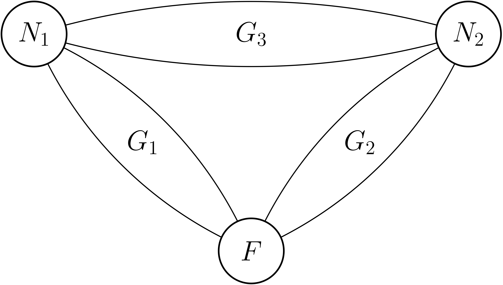

About me
I'm currently a third year PhD student under the supervision of
I'm broadly interested in probabilities and combinatorics. My work focuses on interacting particle systems such as the parking process, the ASEP, and other continuous or discrete diffusion models on the circle.
Publications
-
The golf model on ℤ/nℤ and on ℤ , Electronic Journal of Probability , arxiv:2401.13380Summary and illustration
We introduce a particle model, that we call the golf model. Initially, on a graph G, balls and holes are placed at random on some distinct vertices. Balls then move one by one, doing a random walk on G, starting from their initial vertex and stopping at the first empty hole they encounter, filling it. On finite graphs, under reasonable assumptions (if there are more holes than balls, and if the Markov chain characterizing the random walks is irreducible) a final configuration is reached almost surely. In the paper, we are mainly interested in H1, the set of remaining holes. We give the distribution of H1 on ℤ/nℤ, and describe a phase transition on the largest distance between two consecutive holes when the number of remaining holes has order . We show that the model on ℤ is well-defined when every vertex contains either a ball with probability db, a hole with probability dh, or nothing, independently from the other vertices, as long as db ≤ dh, and we describe the law of H1 in this case.
In preparation
-
Dispersion models on a circle: universal properties and asymptotic results, with Jean-François Marckert Summary and illustration
-
The two-nest ants process on triangle-series-parallel graphs, with Cécile Mailler Summary and illustration
We study a reinforcement learning process for the problem of finding shortest paths in a graph. At each step, an ant starts from a (random) nest, and does a weighted random walk (at each step it choose an adjacent vertex with probability proportional to the weight of the edge between them), and stops when it hits the source of food. The ant reinforces edges they cross on their way back to the nest (adding 1 to their weight), which is the path they take by walking backward on their trace but avoiding useless loops.
We study the 2-nest case, on graphs represented on the picture below, where \(F\) represents the source of food, \(N_1\) and \(N_2\) are the two nests, and \(G_1\), \(G_2\) and \(G_3\) are series-parallel graphs.
We prove that the normalised edge-weights converge, towards random variables which are zero if and only if the associated edges do not belong to a shortest path between two vertices among \(N_1\), \(N_2\) and \(F\).

Talks
Places where I made a presentation :
- Groupe de travail de l'équipe ProbaStat, IECL, Nancy, June 2022
- Séminaire équipe CI, LaBRI, December 2022
- ALEA Days, March 2023 (slides)
- Journées ANR Combiné, IRIF, Paris, July 2023
- Journée scientifique "Automates cellulaires, systèmes de particules, et auto-organisation", LMRS, Rouen, November 2023 (slides)
- Séminaire de probabilités d'Orsay, May 2024
- Journée de probabilités, Institut de Mathématiques de Bordeaux, June 2024
- Journées MAS, Poitiers, August 2024 (slides)
- Journées de Combinatoire de Bordeaux, February 2025 (slides)
- ALEA Days, March 2025 (slides)
Internships
-
Combinatorial and probabilistic aspects of a particle system , supervised by Jean-François Marckert, internship report (in French) -
Probabilistic analysis of a reinforcement-learning algorithm for finding shortest paths , supervised by Cécile Mailler and Daniel Kious, internship report -
An example of interacting particle system: the TASEP on various graphs , supervised by Régine Marchand, internship report (in French)
Teaching (in French)
- Combinatoire, probabilités et statistiques (TD et TP en Python, L2 Informatique, Université de Bordeaux), 2022-2023
- Algorithmique des structures de données arborescentes (TD et TP en OCaml, L2 Informatique, Université de Bordeaux), 2022-2023
- Algorithmique des structures de données (TP en C, L3 Maths-Info, Université de Bordeaux), 2023-2024
- Techniques Algorithmiques et Programmation (TD et TP en C, L3 Informatique, Université de Bordeaux), 2023-2024
- Encadrement d'un groupe de Projet de programmation (groupe de 4 étudiants pendant 4 mois, M1 Informatique, Université de Bordeaux; programmation en C), 2023-2024
- Encadrement d'un groupe de Projet de programmation (groupe de 4 étudiants pendant 4 mois, M1 Informatique, Université de Bordeaux; programmation en C), 2023-2024
- Modèles de la Programmation et du Calcul (TD en L3 Maths-info, Université de Bordeaux), 2024-2025
- Analyse, Classification et indexation de données (TP en Python, M1 Informatique, Université de Bordeaux), 2024-2025